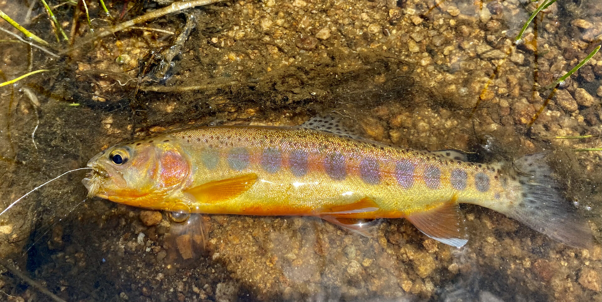

About Trout
Trout are incredibly important for both aquatic ecosystems and human communities.
As a keystone species, trout play a critical role in maintaining the balance and health of freshwater ecosystems.
They are apex predators, feeding on smaller fish, insects, and other aquatic organisms.
By regulating the populations of their prey, trout help to prevent overpopulation and maintain biodiversity.
They also contribute to nutrient cycling by consuming and excreting organic matter, which helps to enrich the ecosystem and support the growth of aquatic vegetation.
Additionally, trout serve as a food source for larger predators, such as birds and mammals, further contributing to the intricate web of life in freshwater habitats.
Trout are highly valued by humans, both ecologically and economically.
They are popular game fish and attract anglers from around the world.
This recreational fishing activity provides economic benefits to local communities, supporting businesses such as fishing outfitters, guides, and tourism industries.
The conservation and management of trout populations are crucial to ensure sustainable fishing practices and the long-term viability of these economic activities.
Trout also serve as indicators of water quality.
They are sensitive to pollution and changes in their habitat, making them valuable sentinels for environmental health.
Monitoring trout populations can help detect and address issues such as water pollution, habitat degradation, and climate change impacts, leading to better management practices and the preservation of healthy aquatic ecosystems for future generations.

California Golden Trout
Trout in California
California is renowned for its diverse and productive trout fisheries, offering a range of angling opportunities for fishing enthusiasts.
The state boasts a variety of trout species, including the native California golden trout, rainbow trout, brown trout, and brook trout.
From pristine mountain streams to large reservoirs and alpine lakes, California's trout fisheries are as varied as its stunning landscapes.
The state's trout fisheries are not only popular among local anglers but also attract visitors from all over the world. The Eastern Sierra region, with its iconic destinations like the Owens River, the Lower and Upper Owens River, and the famous Hot Creek, is a haven for trout fishing enthusiasts.
The Sacramento River, McCloud River, and Hat Creek are also renowned for their exceptional trout fishing experiences.
To ensure the sustainability of these fisheries, California's Department of Fish and Wildlife implements regulations and management strategies.
These measures include bag limits, size restrictions, and seasonal closures to protect spawning periods and maintain healthy populations.
Conservation efforts, such as habitat restoration, stream enhancement projects, and hatchery programs, are also in place to support the long-term viability of trout populations.
California's trout fisheries not only provide recreational opportunities but also contribute to the local economy through tourism, fishing-related businesses, and the sale of fishing licenses.
These fisheries serve as a source of joy and connection with nature for anglers, and they play a vital role in promoting conservation and environmental stewardship in the state.